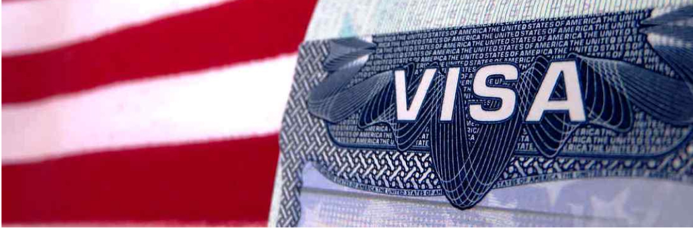

Особенности получения выигрыша в лотерею Грин Кард

Вы сомневаетесь в том, заполнять ли анкету на нашем сайте? Тогда эта статья для вас!
Сейчас идет активная подача анкет на участие в лотерее Грин Кард, розыгрыш которых в этом году заканчивается 10 ноября. Наш сайт посещают десятки тысяч людей и многие из них звонят с различными вопросами. Розыгрыш лотереи проходит очень давно, но, как ни странно, многие соискатели лотереи не знаю многие ее особенности. Вот некоторые их них:
- Если на Вас выпал выигрыш лотереи Грин Кард – никто не обяжет Вас его оформлять; Выигрышем лотереи может воспользоваться не только победитель анкеты, но и Ваш/Ваша муж/жена, дети до 21 года от всех браков супругов, а также жених/невеста победителя;
- Человек, получивший по выигрышу в лотерею Грин Кард вид на жительство в США и желающий его сохранить, должен появляться в США минимум 1 день в году, и минимум 6 месяцев – если в будущем захочет получить гражданство США. Также предусмотрено и отсутствие человека в США более 1 года, если на это получено соответствующее разрешение;
- Получивший вид на жительство в США по выигрышу в лотерею Грин Кард человек сохраняет первоначальное гражданство и все права в стране, где он жил до США, в том числе возможность вернуться на родину, заработав достаточно средств. Хотя возвращение случается редко;
- Только наша организация возвращает оплату, если клиент не получил полноценного результата – визу в посольстве США, даже в случае, когда в этом нет никакой нашей вины;
- Выигрыш дает возможность изменить свою жизнь не только супругам, детям, женихам/невестам, но и другим родственникам выигравшего – их можно вызвать на «воссоединение с членами семьи» на постоянное место жительства в США;
- Средства, заработанные в США, не облагаются двойным налогообложением, а официально трудоустроиться в США победитель лотереи Грин Кард может сразу после приезда в США, не дожидаясь документов;
- Президент США не может своим Указом закрыть розыгрыш или аннулировать его результаты, так как лотерея Грин Кард входит в иммиграционный Закон США, который может быть изменен только взаимном решении Сената США, Палаты Представителей США и одобрен Президентом США;
- Оформление выигрыша не требует никаких согласий и согласования с местными властями, например, таких как – отказ от регистрации по месту жительства, смена паспорта, сбор справок, разрешений и т.п. После получения виз – Вы садитесь на самолет и летите в США;
- По прибытии в США Вы никак не ограничиваетесь в передвижении – Вы можете выбрать любой штат и город для дальнейшего проживания и трудоустройства. Однако госдолжности могут занимать только граждане США. Вышенаписанное – это правильная информация, но, как и везде, есть нюансы, которые Вы можете уточнить, набрав наш номер телефона: +375 (29) 611-00-00 (консультация бесплатная).